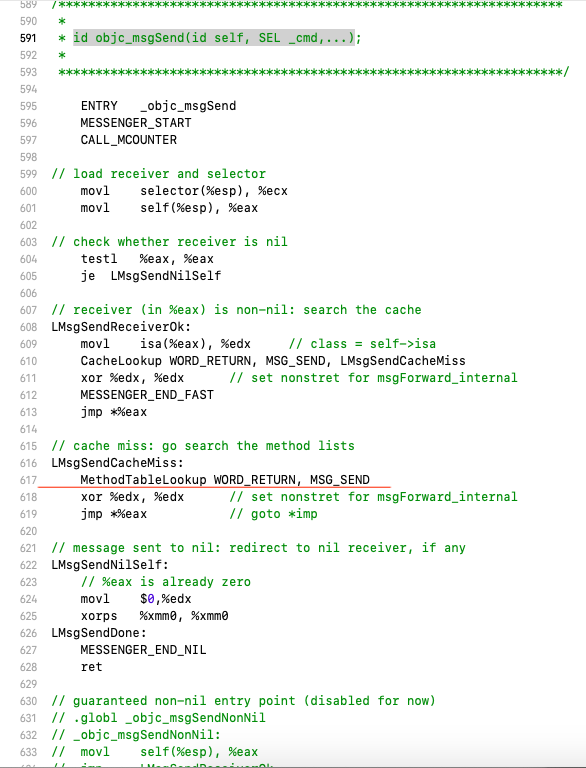
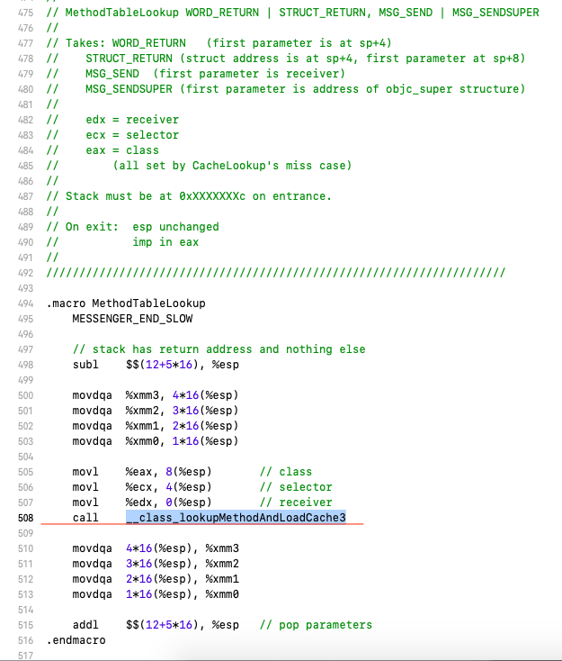
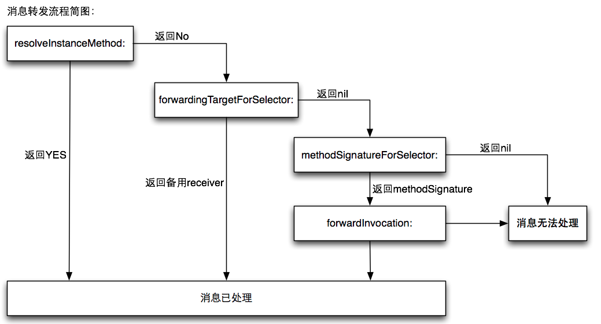
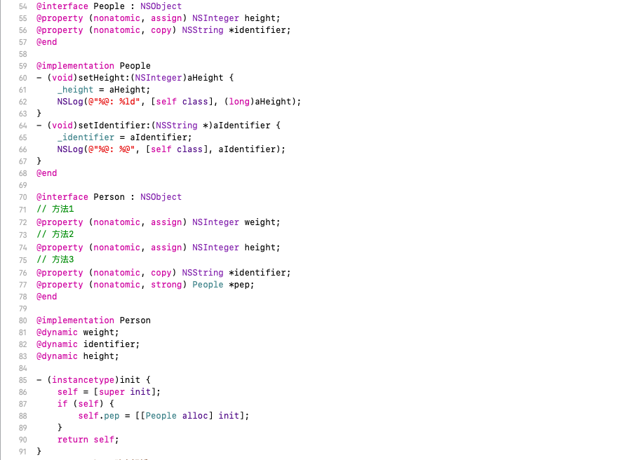
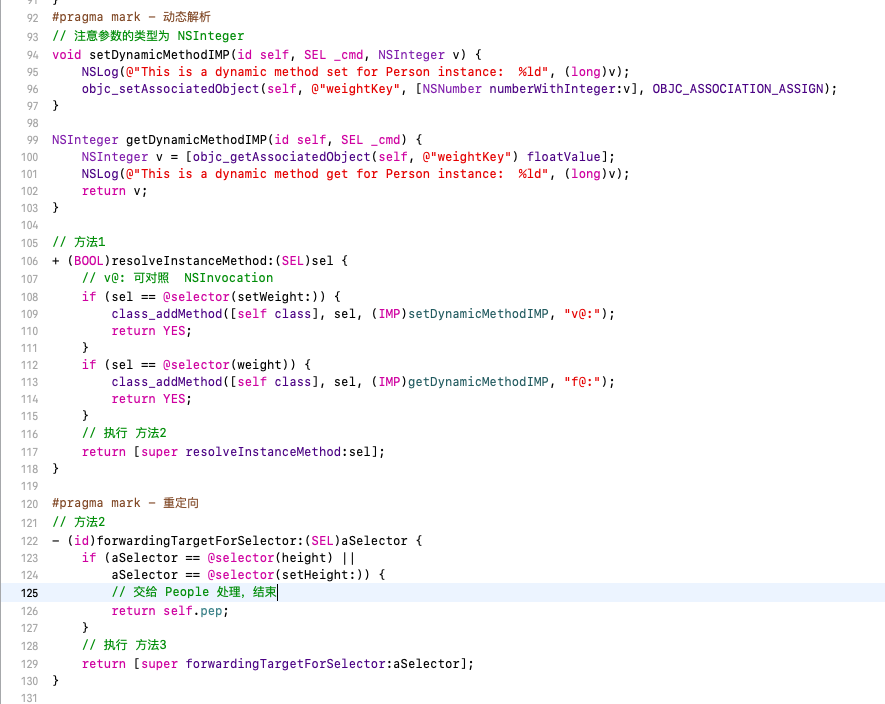
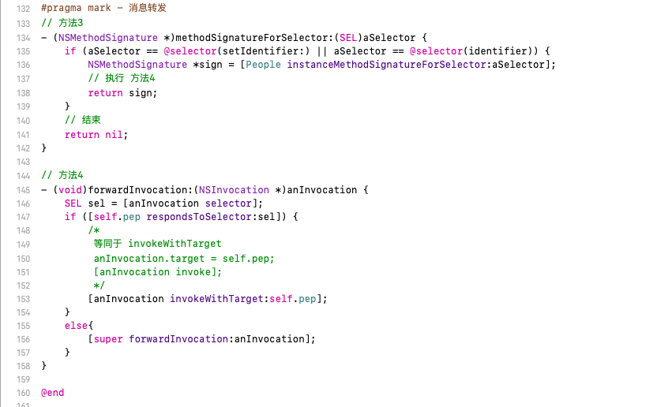

runtime简介
Objective-C 是一个动态语言，它扩展了 C 语言，并加入了面向对象特性和 Smalltalk 式的消息传递机制。这个扩展的核心是一个用 C 和 编译语言 写的 Runtime 库，它是面向对象和动态机制的基石。理解 OC 的 Runtime 机制可以帮我们更好的了解这个语言，还可以帮助我们从系统层面解决项目中的一些设计或技术问题。
Runtime有两个版本: Modern 和 Legacy。这两个版本的最大区别是当你更改一个类的实例变量的布局时，Legacy 版本需要重新编译它的子类。Modern版本运行在iOS 和 macOS 10.5 之后的 64 位程序中。在这之前的32位程序采用的是 Legacy 版本。
OC 从三种不同的层级上与 Runtime 系统进行交互:
1 | 1. 通过 OC 源代码 |
方法调用
在OC中方法的调用是这样的:
1 | [object method]; |
会被编译器转化为:
1 | // 不带参数 |
而这个方法在 Runtime 层会翻译成下面这样:
1 | objc_msgSend(id self, SEL op, ...) |
id
第一个参数类型是id, 它是一个指向类实例的指针:
1 | typedef struct objc_object *id; |
其中 objc_object 结构体参考 objc-private.h 文件部分源码如下:
1 | struct objc_object { |
从源码可知，objc_object 结构体包含一个 isa 指针，类型为 isa_t 联合体。通过 isa 可以找到对象所属的类。
SEL
第二个参数类型为SEL，它是selector在Objc中的类型表示。selector是方法选择器，可以把它理解为区分方法的 ID，而这个 ID 的数据结构是SEL:
1 | typedef struct objc_selector *SEL; |
它的本质是映射到方法的C字符串。我们可以用 Objc 中的 @selector() 或者 Runtime 系统的 sel_registerName 函数来获得一个 SEL 类型的方法选择器。
不同类中相同名字的方法所对应的方法选择器是相同的，即使变量类型不同只要方法名字相同也会导致它们具有相同的方法选择器。
Class
Class 其实是一个指向 objc_class 结构体的指针：
1 | typedef struct objc_class *Class; |
其中 objc_class 参考 objc-runtime.h 文件中部分源码如下:
1 | struct objc_class : objc_object { |
objc_class 继承于 objc_object，也就是说一个 ObjC 类它的本身也是一个对象。为了处理类和对象的关系，runtime 库创建了元类 (Meta Class) ，类对象所属的类型就叫做元类，它用来表述类对象本身所具备的元数据，类方法就定义于此处，因此这些方法可以理解成类对象的实例方法。

上图实线是 superclass 指针，虚线是 isa 指针。 根元类的超类是 NSObject 并且 isa 指向了自己，而 NSObject 的超类为 nil，也就是它没有超类。
元类(Meta Class)是一个类对象的类，所有的类自身也是一个对象，我们可以向这个对象发送消息(调用类的方法)，为了调用这个类的方法，这个类的isa指针必须指向一个包含这些类方法一个objc_class结构体。元类中保存了创建类对象以及类方法需要的所有信息，任何NSObject继承体系下的元类都使用NSObject的元类作为自己的所属类。
objc_msgSend 消息发送
我们以 objc-msg-i386.s 源码为例，我们找到如下关键代码

分析上面的代码中我们知道消息发送过程如下:
- 加载接收器和选择器
- 检查接收器是否为空，如果为空，跳转到第5步
- LMsgSendReceiverOk: 如果接收器不为空，查找缓存（CacheLookup），如果找到退出消息
- LMsgSendCacheMiss: 从方法列表中查找方法指针Imp 关键过程
- LMsgSendNilSelf: 给nil发送消息，并重定向到nil接收器(ObjC 的特性是允许对一个 nil 对象执行任何一个方法不会 Crash)
- LMsgSendDone: 消息发送结束
这上面最最要的一步是从方法列表中查找imp，同样的我们找到该过程的代码如下:

分析这段代码，我们发现该方法实际上是调用了__class_lookupMethodAndLoadCache3 去查找方法指针Imp，对应在 objc-runtime-new.mm 文件中实现如下:
1 | IMP _class_lookupMethodAndLoadCache3(id obj, SEL sel, Class cls) { |
该方法内部实际上调用了 lookUpImpOrForward 方法。
lookUpImpOrForward 方法查找或转发
同理我们看到该方法实现如下所示:
1 | IMP lookUpImpOrForward(Class cls, SEL sel, id inst, |
因此整个imp指针的查找流程总结如下:
判断查找的类是否需要初始化和是否需要执行initialize方法
从receiver的缓存列表中查找，如果找到直接返回，否则进行下一步
从receiver的方法列表中查找，如果找到直接返回，否则进行下一步
分别从该类的父类缓存和方法列表中查找，直至根类(NSObject/NSProxy)，如果找到直接返回，否则进行下一步
如果2，3，4都没有找到，并且没有进行过动态解析，进入动态解析过程（_class_resolveMethod），并回到第2步重新查找
如果以上都失败，进入消息转发，如果还没有响应，就会触发doesNotRecognizeSelector，如果此时不做任何处理，会crash
最后如果消息的接收者能找到对应的 selector，那么就相当于直接执行了接收着这个对象的特定方法，否则消息要么被转发，如果在转发的过程中，也没有相应，会直接crash
消息动态解析(_class_resolveMethod)

在文件 objc-runtime-new.mm 文件中我们看到该方法的实现如下:
1 | void _class_resolveMethod(Class cls, SEL sel, id inst) |
从源码中我们知道，如果该类是元类，先尝试执行 _class_resolveClassMethod 方法去查找，如果没有找到，则再执行 _class_resolveInstanceMethod 方法。如果该类不是元类直接执行 _class_resolveInstanceMethod 方法。
而_class_resolveInstanceMethod 的源码如下所示:
1 | static void _class_resolveInstanceMethod(Class cls, SEL sel, id inst) |
- _class_resolveInstanceMethod 的本质是给指定类发送一个objc_msgSend消息，经过各层级查找，没有就返回nil。此时iOS提供了给用户处理nil的方法resolveInstanceMethod (SEL_resolveInstanceMethod)，通过 optipn 查看，其内部实现的是通过 class_addMethod 动态的添加方法来处理处理消息（@dynamic 属性就与这个过程有关，当一个属性声明为 dynamic 时，就是告诉编译器：开发者自己添加 setter/getter 的实现，而编译时不用自动生成），如果不能添加方法则进入第二步。
如果上述方法未找到，并且实现了转发目标选择器（forwardingTargetForSelector）方法。如果这种方式能在自己的类里面找到替代方法去重载这个方法，就会把消息原封不动地转发给目标对象，否则就会把消息转给其他的对象。但这一步无法对消息进行处理，如操作消息的参数和返回值，因此有着比较高的效率。
如果上述查找失败，我们进行方法签名（methodSignatureForSelector ），这里可以将函数的参数类型和返回值封装。如果该方法返回 nil 说明消息无法处理并报错（ unrecognized selector sent to instance）。如果返回 methodSignature，则将消息转发（forwardInvocation）给其他对象，此时可以修改响应的方法，响应的对象等，如果方法调用成功，则结束。否则报错 （unrecognized selector sent to instance）.
测试代码如下所示:



方法缓存
以下内容参考 深入理解 Objective-C：方法缓存
从上面可知，当一个方法在比较“上层”的类中，用比较“下层”（继承关系上的上下层）对象去调用的时候，如果没有缓存，那么整个查找链是相当长的。就算方法是在这个类里面，当方法比较多的时候，每次都查找也是费事费力的一件事情。
缓存是如何定义的
在objc-cache.mm中，objc_cache的定义如下:
1 | struct objc_cache { |
变量解释:
1 | 1. mask：可以认为是当前能达到的最大index（从0开始的），所以缓存的size（total）是mask+1 |
而cache_entry的定义如下:
1 | typedef struct { |
1 | 1. name，被缓存的方法名字 |
方法缓存的位置
在OC 2.0中，Class的定义大致是这样的（见objc-Runtime.mm）
1 | struct _class_t { |
我们看到在类的定义里就有cache字段，没错，类的所有缓存都存在metaclass上，所以每个类都只有一份方法缓存，而不是每一个类的object都保存一份。
父类方法的缓存只存在父类么，还是子类也会缓存父类的方法？
从objc_msgSend的分析中看到，即便是从父类取到的方法，也会存在类本身的方法缓存里。而当用一个父类对象去调用那个方法的时候，也会在父类的metaclass里缓存一份。
为什么类的方法列表不直接做成散列表呢，做成list，还要单独缓存，多费事？
这个问题可能有以下三个原因：
1 | 1. 散列表是没有顺序的，OC的方法列表是一个list，是有顺序的；OC在查找方法的时候会顺着list依次寻找，并且category的方法在原始方法list的前面，需要先被找到，如果直接用hash存方法，方法的顺序就没法保证。 |
Runtime简单应用
runtime的应用场景很多，常见的有以下场景
1 | 1. 关联对象(Objective-C Associated Objects)给分类增加属性 |
关联对象(Objective-C Associated Objects)给分类增加属性
我们知道分类是不能自定义属性和变量的。但是我们可以通过下面关联对象实现给分类添加属性。
1 | //关联对象 |
id object：被关联的对象
const void *key：关联的key，要求唯一
id value：关联的对象
objc_AssociationPolicy policy：内存管理的策略
1 | typedef OBJC_ENUM(uintptr_t, objc_AssociationPolicy) { |
Method Swizzling 方法添加、替换、KVO实现
一: 方法的添加
class_addMethod([self class], sel, (IMP)fooMethod, “v@:”);
1 | 1. cls 被添加方法的类 |
二: 方法的替换
在OC 的运行时中，每个类中有两个方法都会自动调用，+load和+initialize。+load 是在一个类被初始装载时调用，+initialize 是在应用第一次调用该类的类方法或实例方法前调用的。
swizzling应该只在dispatch_once 中完成,由于swizzling 改变了全局的状态，所以我们需要确保每个预防措施在运行时都是可用的。原子操作就是这样一个用于确保代码只会被执行一次的预防措施，就算是在不同的线程中也能确保代码只执行一次。GCD 中的 dispatch_once满足了所需要的需求，并且应该被当做使用swizzling 的初始化单例方法的标准。
三: KVO的实现
KVO 是通过 isa-swizzling 技术实现的，当你观察一个对象时，一个新的类会动态被创建（NSKVONotifying_xxx）。这个类继承自该对象的原本的类，并重写了被观察属性的 setter 方法。重写的 setter 方法会在调用原 setter 方法之前和之后，通知所有观察对象值的更改。最后把这个对象的 isa 指针指向这个新创建的类，对象变成了新创建的类的实例，而不是原来真正的类。
在这个实现过程中:
1 | 1. 当某个类的对象第一次被观察时，系统就会在运行期动态地创建该类的一个派生类， |
更多关于 Method Swizzling 可参考该以下文章
Objective-C的hook方案（一）: Method Swizzling
以上内容参考以下文章: